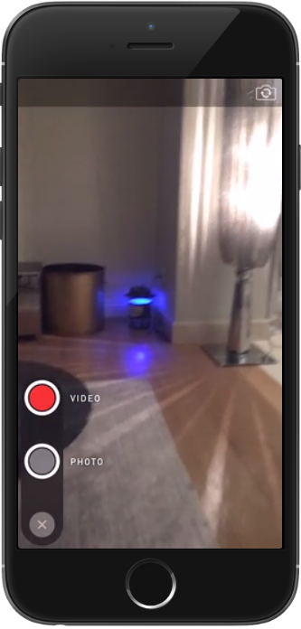
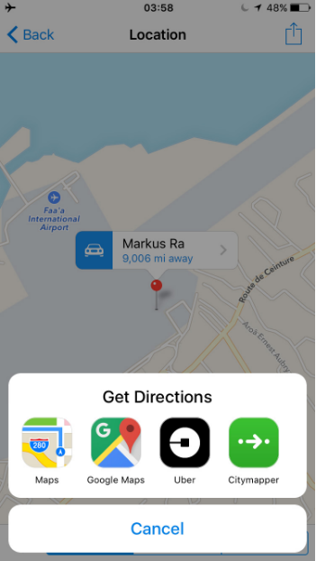

首頁 >
官方新聞
> 即時相機和更多 3D Touch（原文）
拍攝時，即使一秒鐘也可能產生「捕捉完美的瞬間」或「完全失去它」之間的差異。從今天開始，我們的iOS用戶可以在任何時間拍攝照片或影片。要快速使用您的相機，只需"點擊並按住附件按鈕"(即"長按附件按鈕")，然後您已經準備好拍攝了：

這種快速拍照介面預設為帶有閃光燈的"自拍模式"，但您可以改變這一點，而它會記住您的選擇。(譯者提示：上圖右上角的切換圖示！)
這次更新也變得更容易用標準拍照介面來錄製影片。按住"大按鈕"，然後就開始錄製了。應大眾的需求，您在應用程式內錄製的影片現在將以高畫質的品質(Full HD quality)保存到您的裝置。
從今天開始，您可以在任何地方使用 3D Touch 預覽照片和影片，包括在「附件選單」、聊天室中的「歷史訊息」，及「共享的媒體」部分。這同樣適用於"個人頭像"、"群組照片"、"頻道照片")：沒錯，您不再需要在"群組資訊"或"頻道資訊"中，開啟照片以全尺寸查看。(譯者提示：好處是，在挑選照片的過程中，可以先用預覽照片的方式看。就如同之前的放大、預覽貼圖功能一樣！總之，就是運用了iOS的酷炫功能！)
我們還添加了 Uber 和 Citymapper 作為開啟一個位置的選項：

還有，在打開東西部份，我們已經修正"檔案"相關的問題 - 您現在又可以打開您在其他應用程式中獲得的任何檔案。這是非常有用的，讓您在 Telegram 上可以分享和儲存任何類型的文件和檔案，並且在數量上不會受到限制。
今天就這樣了！敬請期待更多更新即將推出！我們將在下一版本中添加很酷的功能，而它將可用於所有平台。
2016年4月28日
電報團隊